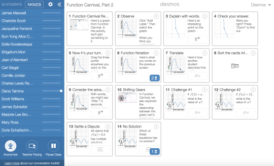
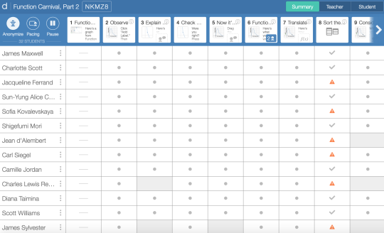

Redesigning the Desmos activity dashboard so teachers can see the class at a glance.
In 2017, I redesigned the dashboard teachers use while facilitating a Desmos activity to better support teachers using increasingly dynamic activities. The dashboard was oriented around helping teachers quickly see how the class was doing overall (summary view), how the class was doing on a specific screen (teacher view), and to easily open what students see to demonstrate or preview things. It also needed to support any combination of components on any screen without additional work.
I still vividly remember user testing the new design with teachers. Teacher after teacher opened the prototype and immediately started using the dashboard, clicking and describing exactly what we were hoping they would be able to do. For a tool teachers need to be able to use confidently in front of their students, this was huge! This dashboard design has been a great foundation for almost 10 years of changes to the activities teachers can use and additional features for teachers to facilitate class discussions.
Read the full story in Introducing the New Desmos Activity Dashboard.

